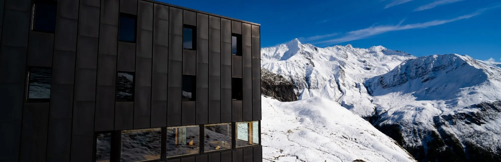
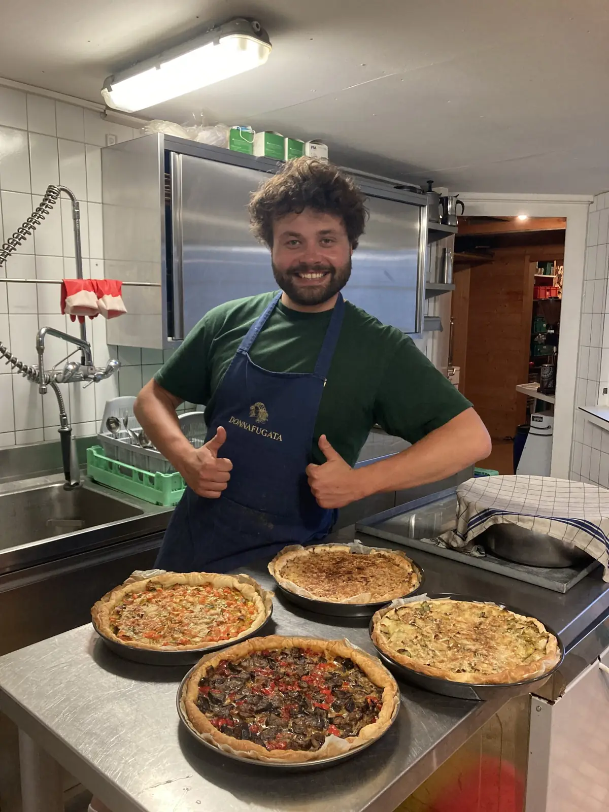
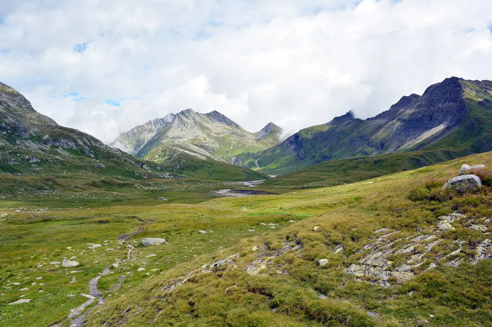
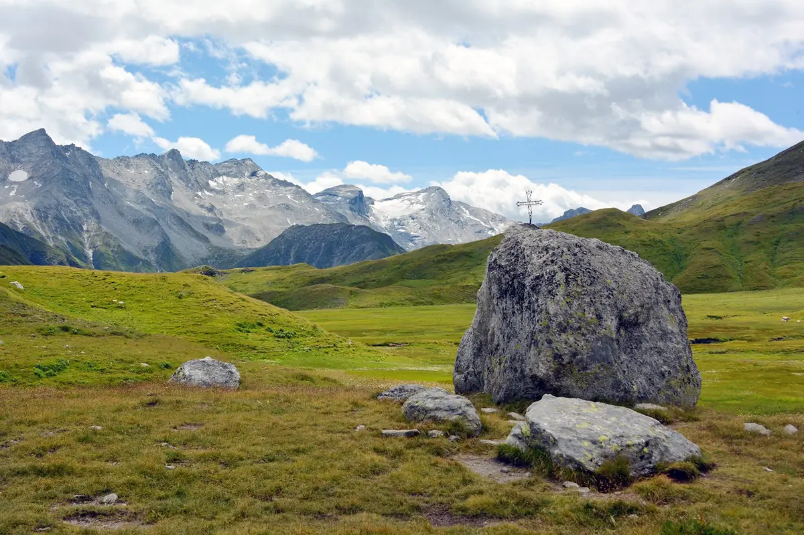
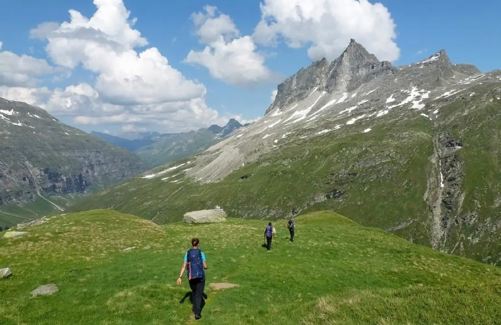

Motterascio
Alpe Motterascio, Greina, Blenio
- Altitude
- 2172 m
- Places
- 70
- Gardiennage
- de mi-juin à mi-octobre

Important
Le refuge est fermé pour l'hiver et rouvrira le samedi 12 juin 2027. Le local d'hiver est ouvert : réservez en cliquant sur le bouton « Réserver ». Des boissons et du bois sont à votre disposition, mais il n'y a ni eau courante ni sanitaires.
Contactez le gardien avant de partir
Vérifiez toujours que le gardien est présent et renseignez-vous sur les conditions en montagne.
- Gardien
- Fabio Merzaghi
- Réservation
- +41 91 872 16 22 (de mi-juin à mi-octobre)
- Portable
- +41 79 727 69 05
- motterascio@casticino.ch
La cabane
Inaugurée en 1967 et agrandie en 1980, 1990 et 2006, la cabane se trouve au bord d’une réserve naturelle extraordinaire : la Greina, avec ses marais, ses tourbières, ses alpages et sa flore intacte. Point de départ d’itinéraires fascinants, surtout vers l’arche de la Greina, la plus grande arche rocheuse naturelle du Tessin.
Au milieu d’un réseau de sentiers entre quelques-uns des plus beaux endroits du sud de la Suisse, la Capanna Michela Motterascio se dresse à 2172 m sur l’Alpe Motterascio, en bordure sud du plateau de la Greina, en harmonie avec le bois, le cuivre et la pierre. Au pied du Piz Terri, du Pizzo Coroi, du Piz Vial, de la Gaglianera et du Piz Valdraus, on passe des journées pleines de promenades, de silence et de repos. Pas besoin d’être un alpiniste expérimenté : un peu de curiosité, d’enthousiasme et d’énergie suffisent.
La cabane est spacieuse : 70 places avec duvets, une salle à manger panoramique de 55 places avec une paroi vitrée sur les Alpes, une salle commune « romantique » de 20 places, des toilettes intérieures séparées pour femmes et hommes, une douche quand l’eau de source suffit, un séchoir et des pantoufles de cabane à l’entrée, aussi pour les petits. L’eau est une eau de source potable ; l’électricité vient du photovoltaïque, avec un générateur de secours. Le sac à viande est obligatoire et peut aussi être loué. Pas de réseau mobile.
Local d’hiver : 10 places avec duvets, boissons, bois et l’essentiel (sel, sucre, café soluble). Apportez votre nourriture ; l’eau n’est pas garantie (fontaine sur la terrasse, si elle n’est pas gelée), et il n’y a pas de toilettes d’hiver. Réservation obligatoire, en ligne ; la confirmation contient toutes les informations.
Séjour
- Ouverture
- Toute l’année
- Gardiennage
- De mi-juin à mi-octobre (en 2026 du 13 juin au 10 octobre) ; en hiver le local d’hiver de 10 places, sur réservation
- Places
- 70
- Repas
- Repas chauds, préparés toute la journée par les gardiens
- Boissons
- Disponibles aussi en l’absence du gardien
La cuisine
À midi, la terrasse ensoleillée et la belle salle commune invitent à des plats régionaux simples, chauds et froids, avec une vue à couper le souffle, plus le buffet de gâteaux maison. Le souper est à 19 h, selon les disponibilités et l’inspiration du cuisinier ; puis un petit-déjeuner copieux pour le lendemain. On cuisine surtout au fourneau à bois et au gaz.
Important : prévenez-nous à temps si vous êtes végétarien ou végan ou si vous avez des allergies ou des intolérances.
Pour les enfants, il y a des jeux, des livres, du papier et des crayons de couleur ; le long du sentier, avec un peu de chance, on voit des marmottes. Les chiens sont les bienvenus mais ne peuvent pas entrer dans la cabane : pour la nuit, le bûcher abrité et sec est prêt avec une couverture et des gamelles. Merci de nous prévenir à l’avance.
En été, le téléphérique de service aide pour le ravitaillement, mais l’hélicoptère reste indispensable : merci de redescendre vos déchets dans la vallée.
Le gardien

Je m’appelle Fabio Merzaghi et j’ai grandi au pied du Monte Generoso, sur les rives du lac de Lugano. La montagne a toujours été ma passion : en hiver je gravis les sommets avec les peaux de phoque, en été je grimpe.
Travailler dans une cabane était mon rêve : je l’ai réalisé à l’été 2023 à la Fornohütte, puis en gérant un temps la Baltschiederklause, à 2783 m en Valais. J’ai suivi le cours de gardien de cabane du Club Alpin Suisse. Ingénieur en mécanique de formation, j’ai quitté le bureau pour une aventure au contact de la nature.
La cabane mise sur des produits locaux de qualité et sur une gestion durable. Et sans les mains magiques de nos fidèles aides, il n’y aurait même pas une part de gâteau : merci de tout cœur !
Fabio
Tarifs et réservation
RéserverMembres CAS/FAT et clubs avec droit de réciprocité
Saison 2026 : nuitée, souper (soupe, salade, plat principal, dessert) et buffet de petit-déjeuner, TVA et taxe de séjour comprises
- Enfants jusqu’à 7 ans
- Fr. 30.–
- Enfants de 8 à 14 ans
- Fr. 50.–
- Jeunes de 15 à 21 ans
- Fr. 65.–
- Adultes dès 22 ans
- Fr. 82.–
- Guides de montagne
- Fr. 52.–
Non-membres
Saison 2026 : nuitée, souper et buffet de petit-déjeuner, TVA et taxe de séjour comprises
- Enfants jusqu’à 7 ans
- Fr. 32.–
- Enfants de 8 à 14 ans
- Fr. 55.–
- Jeunes de 15 à 21 ans
- Fr. 72.–
- Adultes dès 22 ans
- Fr. 95.–
Familles et groupes
Rabais en semaine pour les familles (dimanche-jeudi) et prix pour écoles, scouts et J+S (lundi-jeudi)
- Familles : réduction par enfant de moins de 15 ans
- Fr. 5.–
- Groupes : enfants de 8 à 14 ans
- Fr. 40.–
- Groupes : jeunes de 15 à 18 ans
- Fr. 50.–
Suppléments
Pour des raisons d’hygiène, le sac à viande est obligatoire
- Pique-nique
- Fr. 10.–
- Thé (1 l)
- Fr. 3.–
- Douche (par personne)
- Fr. 5.–
- Sac à viande jetable
- Fr. 7.–
- Sac à viande en location
- Fr. 5.–
- Réservation en ligne avec le bouton « Réserver » ; à la dernière minute, téléphonez.
- Paiement uniquement en espèces, en francs ou en euros.
- Dès le 1er novembre 2026, annulations et modifications sont gratuites jusqu’à 18 h deux jours avant l’arrivée ; ensuite Fr. 30.– par personne et par nuit, et après 18 h la veille ou en cas de non-présentation non annoncée Fr. 50.– par personne et par nuit.
- Pour les nuitées dès le 1er novembre 2027, une taxe de réservation de Fr. 10.– par personne et par nuit est perçue à la réservation, déduite de la facture et non remboursable.
Accès
En été, la cabane s’atteint facilement à pied, surtout par des sentiers adaptés aux familles. En hiver, on monte à skis par le Val Camadra et le col de la Greina (5-6 h), seulement avec une neige stable et quand les pentes latérales se sont déchargées.
- Du lac de Luzzone, Alpe Garzott : 2 h.
- Du lac de Luzzone, barrage : 3 h 30.
- De Ghirone par le lac de Luzzone : 4 h 30 ; par le Val Camadra : 6 h.
- De Pian Geirètt : 3 h 30.
- De Vrin : 5 h ; de Vals : 7-8 h.
En transports publics : train et bus jusqu’à Ghirone, Aquilesco ; puis le Bus alpin des Autolinee Bleniesi jusqu’au lac de Luzzone ou à Pian Geirètt, tous les jours en juillet et août, seulement le week-end en septembre.
En voiture : A2 jusqu’à Biasca, puis direction col du Lukmanier jusqu’à Campo Blenio et Ghirone ; monter au barrage du Luzzone et longer le lac jusqu’à l’Alpe Garzott. Parking gratuit à Ghirone-Aquilesco et au barrage (avec toilettes ; Ristorante Luzzone d’avril à octobre) ; à l’Alpe Garzott, où l’on peut acheter un excellent fromage, il n’y a que quelques places : arrivez tôt ou partagez les voitures.
Taxi : Poglia Mirko (Olivone) +41 79 444 07 12 ; Taxi Riviera (Biasca) +41 79 413 68 68.
Traversées vers d’autres cabanes : Terri 2 h 30 ; Scaletta 2 h ; Bovarina 5 h ; Adula CAS 5 h ; Adula UTOE 6 h ; Medelser Hütte 6 h ; Läntahütte 7 h ; Rifugio Scaradra 3 h. Itinéraires sur SuisseMobile.
Cartes : carte nationale 1:25 000 feuille 1233 Greina ; carte de ski de randonnée 256 S.
Activités
La Greina est un haut plateau unique entre le Tessin et les Grisons, long de près de 6 km et à plus de 2200 m d’altitude : une toundra alpine protégée, inscrite à l’Inventaire fédéral des paysages d’importance nationale. Elle est intacte : les seuls signes de l’homme sont le Crap la Crusch et le col du Crap, où une croix de fer rappelle que la Greina était déjà un passage et un pâturage à l’époque romaine et au Moyen Âge.
D’innombrables sources y jaillissent, formant méandres, bras morts et marais sur la ligne de partage des eaux : le Brenno della Greina coule vers la Méditerranée, le Rein da Sumvitg vers la mer du Nord. C’est la reine des contrastes, entre le blanc des glaciers, le noir des schistes et le vert de la toundra, avec l’arche rocheuse d’une quarantaine de mètres, les tourbières, les petites tours rocheuses et les dolines. Pour vraiment sentir sa magie, restez deux jours ou plus.

Tour de la Greina
La Greina en un jour : du Luzzone à la cabane, par le col de la Greina et en descendant vers la Scaletta, avec le Bus alpin.
En savoir plus
Propositions de courses
Six courses depuis la cabane : Crap la Crusch, Piz Terri, l’arche de la Greina, la Plaun la Greina et la Via Crio.
En savoir plus
Trek Greina Alta
De Curaglia à Vals en quatre étapes : trois cabanes du CAS, trois cultures, trois langues.
En savoir plusNouvelles de la cabane
Les dernières nouvelles de la cabane, publiées par l’équipe sur Facebook (surtout en italien).
Ouvrir la page FacebookLes publications ne sont chargées depuis Facebook qu’après le clic : dès ce moment, Facebook reçoit des données sur votre visite.
Soutenir la cabane
L’entretien, les rénovations et les travaux coûtent cher : les cabanes vivent aussi grâce aux membres et aux amis de la montagne. Vous pouvez les soutenir par un don sur le compte de la section, en indiquant le nom de la cabane.
- Compte
- Banca Stato, Lugano
IBAN CH09 0076 4128 9526 1200 6 - Communication
- Capanna Motterascio
Soutiens
Un grand merci aux partenaires qui soutiennent la cabane.